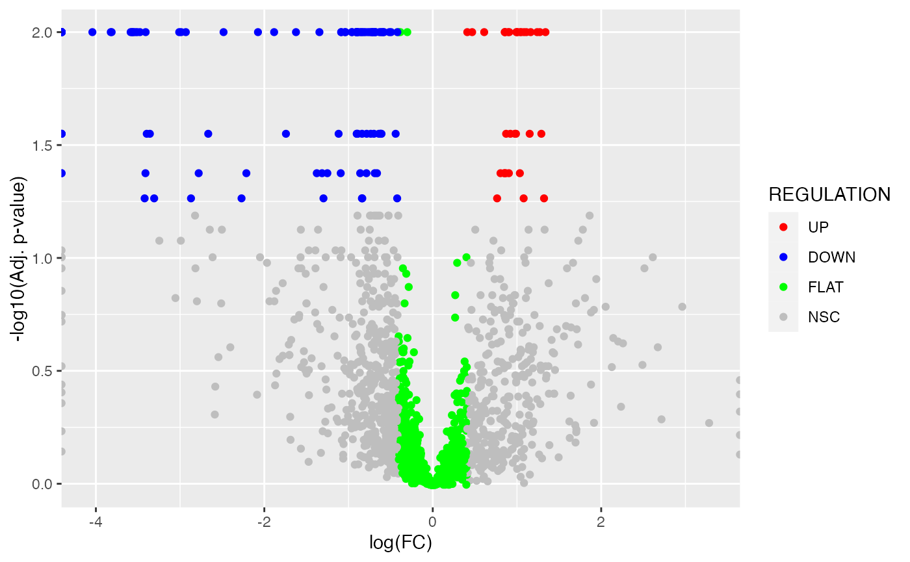
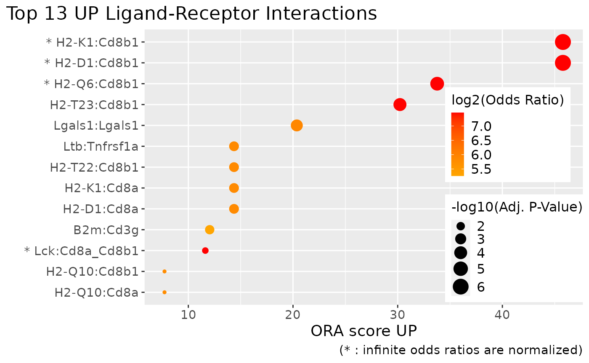

Introduction to scDiffCom
Cyril Lagger, Eugen Ursu
scDiffCom-vignette.RmdOverview and terminology
scDiffCom infers how intercellular communication changes between two conditions of interest from scRNA-seq data. The package can also be used without performing differential analysis if one is not interested in comparing conditions but only in investigating detected cell-cell interactions.
In addition to this vignette, we also recommend reading our (Nature Aging paper) for more information about the statistical methods used by the package.
Important terminology:
- LRI (ligand-receptor interaction): a set of genes whose proteins are
known to interact during extracellular signalling. The package
distinguishes simple LRIs (e.g.
Apoe:Ldlr) and complex/heteromeric LRIs (e.g.Col3a1:Itgb1_Itga2). - CCI (cell-cell interaction): a communication signal of the form
(B cell, T cell; Apoe:Ldlr)whereB cellis the emitter cell type expressing the ligandApoeandT cellis the receiver cell type expressing the receptorLdlr.
Note: the toy-model results below do not convey any meaningful biology.
Standard intercellular communication differential analysis
Prepare a Seurat object
The input of scDiffCom must be a Seurat object with cells
annotated by cell types. A pairwise condition on the cells is also
necessary for the differential analysis.
As a toy-model example, we use a down-sampled Seurat object containing mouse liver cells from Tabula Muris Senis. This object is part of the package:
seurat_object <- scDiffCom::seurat_sample_tms_liver
seurat_object
## An object of class Seurat
## 726 features across 468 samples within 1 assay
## Active assay: RNA (726 features, 0 variable features)
## 2 layers present: counts, data
# The object already contains a column "cell_type" in its meta.data
table(seurat_object[["cell_type"]])
## cell_type
## B cell endothelial cell of hepatic sinusoid
## 84 100
## hepatocyte myeloid leukocyte
## 100 100
## T cell
## 84
# Cells can be grouped based on mice age
table(seurat_object[["age_group"]])
## age_group
## OLD YOUNG
## 250 218Run default analysis
The full detection and differential analysis is performed by the
function run_interaction_analysis. Several permutation
tests are performed to assess the significance of both the specificity
and the differential expression of each potential cell-cell interaction
(CCI). 1000 permutations are done by default as this is fast and
sufficient for a preliminary exploratory analysis. Otherwise, we
recommend 10’000 permutations. Parallel computing can be easily enabled
by loading the future package and
setting the plan accordingly:
# Load future (optional)
library(future)
plan(sequential) # sequentially in the current R process, equivalent to do nothing
#plan(multisession, workers = 4) # background R sessions
#plan(multicore, workers = 4) # forked R processes, not Windows/not RStudioRunning the analysis only requires to specify the species, the names of the columns where the cell-type annotation and pairwise condition are stored and the explicit names of the two conditions:
# Run differential analysis with default parameters
scdiffcom_object <- run_interaction_analysis(
seurat_object = seurat_object,
LRI_species = "mouse",
seurat_celltype_id = "cell_type",
seurat_condition_id = list(
column_name = "age_group",
cond1_name = "YOUNG",
cond2_name = "OLD"
)
)
## Extracting data from assay 'RNA' and slot 'data' (assuming normalized log1p-transformed data).
## Converting normalized data from log1p-transformed to non-log1p-transformed.
## Input data: 726 genes, 468 cells and 5 cell-types.
## Input ligand-receptor database: 4582 mouse interactions.
## Number of LRIs that match to genes present in the dataset: 1173.
## Type of analysis to be performed: differential analysis between YOUNG and OLD cells.
## Total number of potential cell-cell interactions (CCIs): 29325 (5 * 5 * 1173).
## Performing permutation analysis (1000 iterations by batches of 1000) on 8952 potential CCIs.
## Performing batch 1 of 1.
## Filtering and cleaning 'raw' CCIs.
## Returning 1896 detected CCIs.
## Performing over-representation analysis on the categories: LRI, LIGAND_COMPLEX, RECEPTOR_COMPLEX, ER_CELLTYPES, EMITTER_CELLTYPE, RECEIVER_CELLTYPE, GO_TERMS, KEGG_PWS.
## Successfully returning final scDiffCom object.The output of run_interaction_analysis is an S4 object
of class scDiffCom:
scdiffcom_object
## An object of class scDiffCom with name scDiffCom_object
## Analysis performed: differential analysis between YOUNG and OLD cells
## 1896 detected CCIs across 5 cell types
## Over-representation results for LRI, LIGAND_COMPLEX, RECEPTOR_COMPLEX, ER_CELLTYPES, EMITTER_CELLTYPE, RECEIVER_CELLTYPE, GO_TERMS, KEGG_PWSExplore the results from the Shiny app
A Shiny app can be launched from each scDiffCom object
to interactively visualize the detected CCIs and how they are
differentially expressed. Over-representation results are also directly
available from the app. As an option, it is possible to first reduce
over-represented GO terms by semantic similarity such that they will be
displayed as a treemap. Also note that you might be prompted to install
several packages.
if (!requireNamespace("BiocManager", quietly = TRUE))
install.packages("BiocManager")
if (!require("shiny")) install.packages("shiny")
if (!require("shinyWidgets")) install.packages("shinyWidgets")
if (!require("shinythemes")) install.packages("shinythemes")
if (!require("DT")) install.packages("DT")
if (!require("kableExtra")) install.packages("kableExtra")
if (!require("RColorBrewer")) install.packages("RColorBrewer")
if (!require("igraph")) install.packages("igraph")
if (!require("visNetwork")) install.packages("visNetwork")
if (!require("plotly")) install.packages("plotly")
if (!require("GOSemSim")) BiocManager::install("GoSemSim")
if (!require("rrvgo")) BiocManager::install("rrvgo")
if (!require("org.Mm.eg.db")) BiocManager::install("org.Mm.eg.db")
reduced_go_terms <- ReduceGO(scdiffcom_object) # optional
BuildShiny(
scdiffcom_object,
reduced_go_table = reduced_go_terms # NULL by default
)Explore the results manually
Instead of using the Shiny app, the results can also be extracted
directly from the scDiffCom object with the provided
accessors:
-
GetParameters()returns the list of parameters used byrun_interaction_analysis() -
GetTableCCI()returns a (complete or simplified) data.table either of the detected CCIs or of all the hypothetical CCIs. -
GetTableORA()returns a list of (complete or simplified) data.tables with over-representation results.
From there, results can be analysed and visualised from either custom
or scDiffCom functions.
# Retrieve and display all detected CCIs
CCI_detected <- GetTableCCI(scdiffcom_object, type = "detected", simplified = TRUE)
# Number of CCIs per regulation type (here with age)
table(CCI_detected$REGULATION)
##
## DOWN FLAT NSC UP
## 115 927 820 34
# Retrieve the ORA results
ORA_results <- GetTableORA(scdiffcom_object, categories = "all", simplified = TRUE)
# Categories available
names(ORA_results)
## [1] "LRI" "LIGAND_COMPLEX" "RECEPTOR_COMPLEX"
## [4] "ER_CELLTYPES" "EMITTER_CELLTYPE" "RECEIVER_CELLTYPE"
## [7] "GO_TERMS" "KEGG_PWS"Custom volcano plot of CCIs:
if (!require("ggplot2")) install.packages("ggplot2")
library(ggplot2)
ggplot(
CCI_detected,
aes(
x = LOGFC,
y = -log10(BH_P_VALUE_DE + 1E-2),
colour = REGULATION
)
) + geom_point(
) + scale_colour_manual(
values = c("UP" = "red", "DOWN" = "blue", "FLAT" = "green", "NSC" = "grey")
) + xlab(
"log(FC)"
) + ylab(
"-log10(Adj. p-value)"
)
Dot plots of over-represented terms:
# Plot the most over-represented up-regulated LRIs
# PlotORA returns a ggplot object that you can further optimize (e.g. here to place the legend)
PlotORA(
object = scdiffcom_object,
category = "LRI",
regulation = "UP"
) + theme(
legend.position = c(0.85, 0.4),
legend.key.size = unit(0.4, "cm")
)
A network of over-represented cell types and cell-type to cell-type interactions:
if (!require("visNetwork")) install.packages("visNetwork")
if (!require("igraph")) install.packages("igraph")
if (!require("kableExtra")) install.packages("kableExtra")
if (!require("RColorBrewer")) install.packages("RColorBrewer")
BuildNetwork(
object = scdiffcom_object
)Detection-only analysis
If one has no condition to compare, scDiffCom can still
be used to return detected CCIs only:
scdiffcom_detection_only <- run_interaction_analysis(
seurat_object = seurat_object,
LRI_species = "mouse",
seurat_celltype_id = "cell_type",
seurat_condition_id = NULL
)
## Extracting data from assay 'RNA' and slot 'data' (assuming normalized log1p-transformed data).
## Converting normalized data from log1p-transformed to non-log1p-transformed.
## Input data: 726 genes, 468 cells and 5 cell-types.
## Input ligand-receptor database: 4582 mouse interactions.
## Number of LRIs that match to genes present in the dataset: 1173.
## Type of analysis to be performed: detection analysis without conditions.
## Total number of potential cell-cell interactions (CCIs): 29325 (5 * 5 * 1173).
## Performing permutation analysis (1000 iterations by batches of 1000) on 7352 potential CCIs.
## Performing batch 1 of 1.
## Filtering and cleaning 'raw' CCIs.
## Returning 1947 detected CCIs.
## No over-representation analysis available for the selected parameters.
## Successfully returning final scDiffCom object.Although it is currently not possible to explore such results with a Shiny app, such functionality should be added in a future release of the package ( as well as with other downstream analysis tools).
Database of ligand-receptor interactions
scDiffcom infers cell type to cell type communication
patterns from the expression of genes known to be involved in
ligand-receptor interactions (LRIs). The package contains it own
internal databases of curated LRIs (for human, mouse and rat), retrieved
from previous studies.
As shown above, there is no need to call the LRI databases explicitly when performing an analysis. However, they can be accessed and explored as follows:
# Load, e.g., the mouse database
data(LRI_mouse)
# Display the data.table of LRIs (more information available in other columns)
LRI_mouse$LRI_curated[, c("LRI")]
## LRI
## 1: 1700013F07Rik:Plscr4
## 2: 9530003J23Rik:Itgal
## 3: A2m:Lrp1
## 4: Aanat:Mtnr1a
## 5: Aanat:Mtnr1b
## ---
## 4578: a:Mc1r
## 4579: a:Mc2r
## 4580: a:Mc3r
## 4581: a:Mc4r
## 4582: a:Mc5r
# Display the data.table of GO Terms attached to each LRI
LRI_mouse$LRI_curated_GO
## LRI GO_ID
## 1: 1700013F07Rik:Plscr4 GO:0005575
## 2: 1700013F07Rik:Plscr4 GO:0110165
## 3: 1700013F07Rik:Plscr4 GO:0003674
## 4: 1700013F07Rik:Plscr4 GO:0005215
## 5: 1700013F07Rik:Plscr4 GO:0005488
## ---
## 247958: a:Mc5r GO:0065007
## 247959: a:Mc5r GO:0050789
## 247960: a:Mc5r GO:0050794
## 247961: a:Mc5r GO:0007165
## 247962: a:Mc5r GO:0019222
# Information about GO terms (more information available in other columns)
# LEVEL corresponds to the depth of the GO term in the GO graph
data(gene_ontology_level)
gene_ontology_level[, c("NAME", "LEVEL")]
## NAME LEVEL
## 1: mitochondrion inheritance 8
## 2: mitochondrial genome maintenance 7
## 3: reproduction 2
## 4: obsolete ribosomal chaperone activity 1
## 5: high-affinity zinc transmembrane transporter activity 10
## ---
## 47216: part of 1
## 47217: positively regulates 2
## 47218: regulates 1
## 47219: starts_during 1
## 47220: term tracker item 1Using a custom database of ligand-receptor interactions
scDiffcom also allows users to use their own LRI
database and associated annotations as follows.
As an example, we simply use a downsized version of the mouse database. It can be any database as long as it is a data.table with the same columns as the default.
custom_LRI <- LRI_mouse$LRI_curated[1:100, ]We note that ORA on GO and KEGG terms cannot be peformed by default when using a custom database. It is therefore skipped unless the user provides custom annotation tables. Here, we can obtain them by subsetting the default tables accordingly:
custom_LRI_GO <- LRI_mouse$LRI_curated_GO[LRI %in% custom_LRI$LRI]
custom_LRI_KEGG <- LRI_mouse$LRI_curated_KEGG[LRI %in% custom_LRI$LRI][, c("LRI", "KEGG_ID")]Finally, scDiffCom can be run by changing the parameter
LRI_species to "custom" and providing the
custom LRI and annotation tables as a list:
scdiffcom_object_customlri <- run_interaction_analysis(
seurat_object = seurat_object,
LRI_species = "custom",
seurat_celltype_id = "cell_type",
seurat_condition_id = list(
column_name = "age_group",
cond1_name = "YOUNG",
cond2_name = "OLD"
),
custom_LRI_tables = list(LRI = custom_LRI, custom_GO = custom_LRI_GO, custom_KEGG = custom_LRI_KEGG)
)
## Using custom LRI table. Use at your own risk!
## Extracting data from assay 'RNA' and slot 'data' (assuming normalized log1p-transformed data).
## Converting normalized data from log1p-transformed to non-log1p-transformed.
## Input data: 726 genes, 468 cells and 5 cell-types.
## Input ligand-receptor database: 100 custom interactions.
## Number of LRIs that match to genes present in the dataset: 16.
## Type of analysis to be performed: differential analysis between YOUNG and OLD cells.
## Total number of potential cell-cell interactions (CCIs): 400 (5 * 5 * 16).
## Performing permutation analysis (1000 iterations by batches of 1000) on 111 potential CCIs.
## Performing batch 1 of 1.
## Filtering and cleaning 'raw' CCIs.
## Returning 18 detected CCIs.
## ORA not performed on GO/KEGG when using a custom LRI database, unless custom tables are provided.
## Performing over-representation analysis on the categories: LRI, LIGAND_COMPLEX, RECEPTOR_COMPLEX, ER_CELLTYPES, EMITTER_CELLTYPE, RECEIVER_CELLTYPE, GO_ID, KEGG_ID.
## Successfully returning final scDiffCom object.Additional functionalities
Modifying default parameters
run_interaction_analysis depends on several parameters
that can be modified. We encourage to carefully read the documentation
(?run_interaction_analysis). For convenience, the input
parameters are stored in the returned object in the slot
parameters:
# display the first three parameters
head(GetParameters(scdiffcom_object), 3)
## $object_name
## [1] "scDiffCom_object"
##
## $LRI_species
## [1] "mouse"
##
## $seurat_celltype_id
## [1] "cell_type"Among those parameters are four filtering thresholds that can be
modified to recompute the results without having to perform the
time-consuming permutation analyses again. This works because we store
an intermediate table of all hypothetic CCIs in the slot
cci_table_raw. The disadvantage is that storing this
data.table can make the object heavy depending on the dataset. You can
either decide to keep this table allowing you to quickly update your
results in case you want to modify some filtering parameters or to erase
this table to save space.
# create a new object with a different log fold change threshold
scdiffcom_object_stringent_logfc <- FilterCCI(
object = scdiffcom_object,
new_threshold_logfc = log(2)
)
## Filtering and cleaning 'raw' CCIs.
## Returning 1896 detected CCIs.
## Performing over-representation analysis on the categories: LRI, LIGAND_COMPLEX, RECEPTOR_COMPLEX, ER_CELLTYPES, EMITTER_CELLTYPE, RECEIVER_CELLTYPE, GO_TERMS, KEGG_PWS.
## Erasing all previous ORA results: LRI, LIGAND_COMPLEX, RECEPTOR_COMPLEX, ER_CELLTYPES, EMITTER_CELLTYPE, RECEIVER_CELLTYPE, GO_TERMS, KEGG_PWS.
# create a copy of the original object, but without the heavy intermediate table
scdiffcom_object_light <- EraseRawCCI(scdiffcom_object)
# the light object cannot be updated anymore
FilterCCI(
object = scdiffcom_object_light,
new_threshold_logfc = log(2)
)
## Error in run_filtering_and_ora(object = object, new_threshold_quantile_score = new_threshold_quantile_score, : slot 'cci_table_raw' of 'object' is empty, impossible to filterPerforming ORA on custom categories
By default, ORA is performed on a set of categories that are always present for any dataset analysed (LRI, GO Terms, etc). However, you might want to find over-represented results for a category only relevant to your dataset. This is possible to achieve as long as you are able to build a relationship between the terms of your new category and those of a default category. As an example, we show here how we can perform ORA on cell-type families:
# Create a data.table that associates cell-type families to cell types
# Here we use the default category EMITTER_CELLTYPE (RECEIVER_CELLTYPE would also work)
cell_families_relation <- data.table(
EMITTER_CELLTYPE = c(
"B cell",
"T cell",
"endothelial cell of hepatic sinusoid",
"hepatocyte",
"myeloid leukocyte"
),
EMITTER_CELLFAMILY = c(
"leukocyte",
"leukocyte",
"endothelial cell",
"epithelial cell",
"leukocyte"
)
)
# Run ORA with the cell type families as extra annotation
scdiffcom_object <- RunORA(
object = scdiffcom_object,
extra_annotations = list(
cell_families_relation
),
overwrite = FALSE
)
## Performing over-representation analysis on the categories: EMITTER_CELLFAMILY.
## Keeping previous ORA results: LRI, LIGAND_COMPLEX, RECEPTOR_COMPLEX, ER_CELLTYPES, EMITTER_CELLTYPE, RECEIVER_CELLTYPE, GO_TERMS, KEGG_PWS.The object now contains a new table in its slot
ora_table.